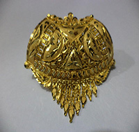
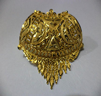
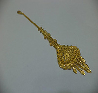
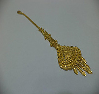

Bhim Jewelry & Repair House
699 S. Clinton Ave, Rochester, New York, 14620. Phone Number: 585-473-6005
 

 

Bhim Jewelry & Repair House
Established in 2012, Bhim Jewelry & Repair House is proud to be one of full service jewelry store and a repair house in the heart of city of Rochester, New York. We specialize in custom designed jewelry, engagement rings, wedding bands, bracelets, pendants and many more items. All of jewelry repairs and deigns are done on site. We always make sure your jewelry needs is always taken care by one of our expert jeweler. We only use 24-caret Gold and 99.9% pure Silver to craft all of our products and they are backed by our lifetime buy back guarantee, making your shopping confident.
We can't wait to see you in our store and show you our self-crafted jewelry deigns that you fall in love with.
Jewelry Repair Services:
We also take care of all your jewelry repair needs. All of our team members have extensive years of experience in jewelry repairs, and we always put utmost care and attention into every repair job. We also make sure that you get the shine of that piece before you walk out of our store!